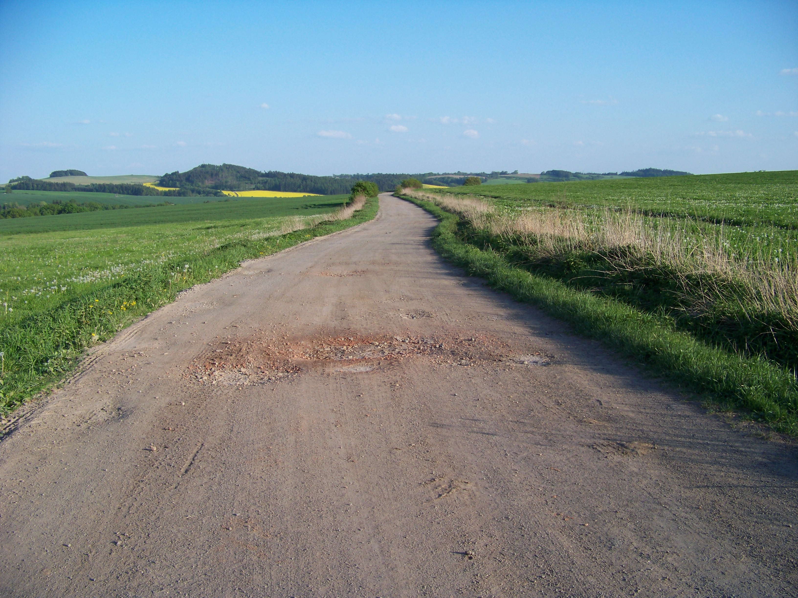

Zámek Lednice

Jděte 1,5 km vpřed a potom odbočte doleva.
Nehoda přibližně 8 km daleko. Dbejte na zvýšenou opatrnost!
Uživatelé hlásí, že na aktuálním úseku není stinné místo.
 Přibližně v 14:57 očekávejte rychlou přeháňku.
Pozastaveno
19°C
